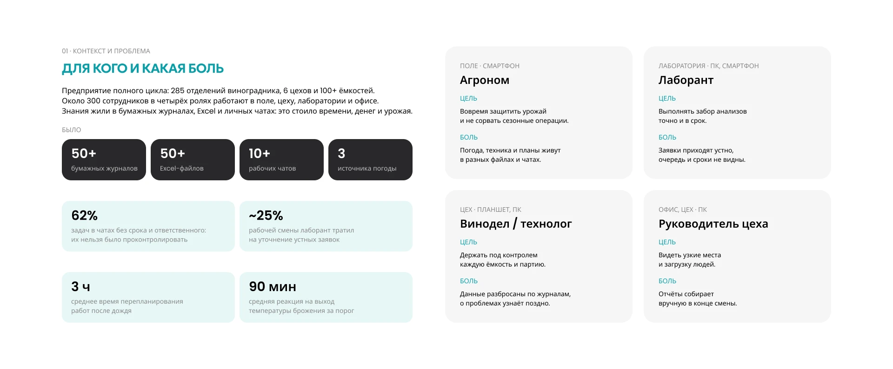
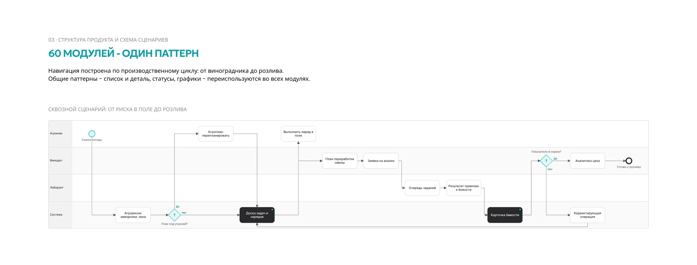
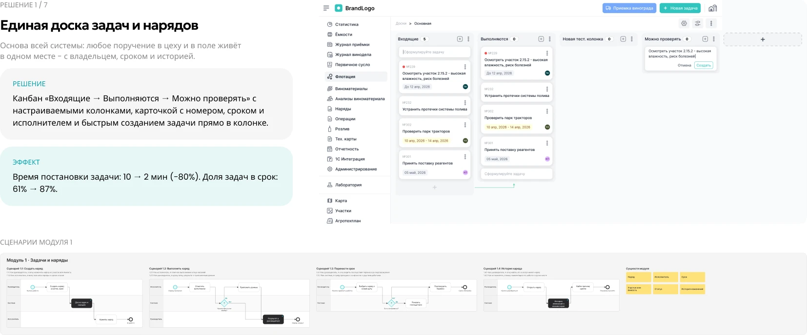
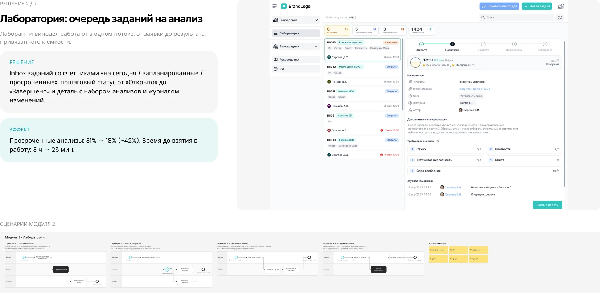
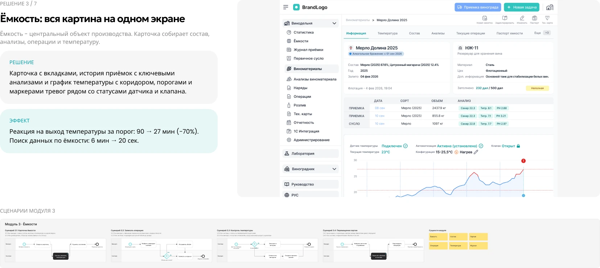
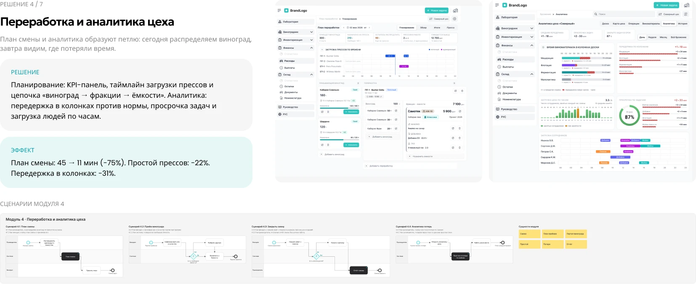
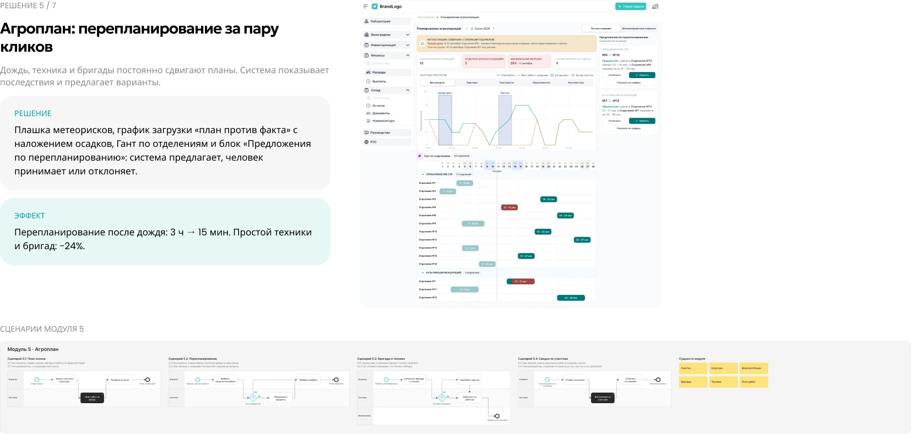
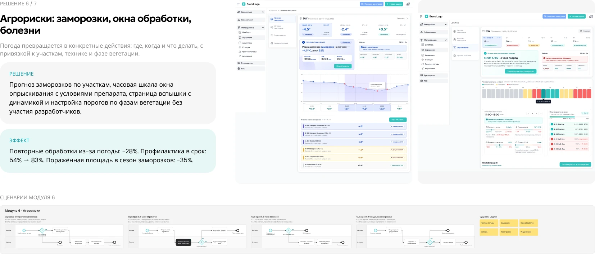
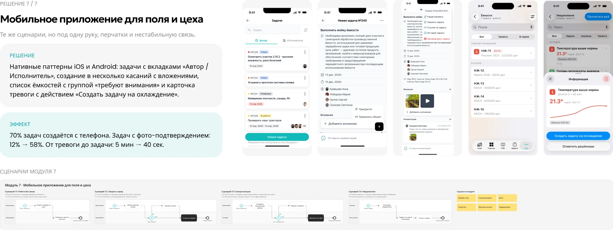

B2B SAAS · WEB + MOBILE · NDA
Цифровая платформа для винодельни
Система автоматизации производственных процессов на винодельнях. Она заменяет бумажные журналы и Excel единой системой для агрономов, виноделов и лаборантов, применяет искусственный интеллект и имеет модульную структуру, охватывая весь цикл: от лозы до бутылки.


МОЯ РОЛЬ
Я вёл дизайн платформы от исследования до готовых интерфейсов и дизайн-системы. Вместе с PM, аналитиками и разработчиками превращал процессы винодельни в понятные экраны, а на проверках с технологами, лаборантами и агрономами уточнял решения.
КОРОТКО О КЕЙСЕ
Винодельня жила на бумажных журналах, таблицах и чатах: задачи терялись, анализы опаздывали, погоду сверяли вручную. Мы собрали единую платформу из 60 модулей: от агроплана и прогноза рисков до лаборатории и аналитики цеха. Она работает на компьютере в офисе и на телефоне в поле.
Для кого и какая боль
Предприятие полного цикла: 285 отделений виноградника, 6 цехов и 100+ ёмкостей. Около 300 сотрудников в четырёх ролях работают в поле, цеху, лаборатории и офисе. Знания жили в бумажных журналах, Excel и личных чатах: это стоило времени, денег и урожая.

Что узнали и как шли к решению
Три недели погружения: интервью, наблюдение за сменами и аудит артефактов. Дальше работали итерациями по модулям: небольшими релизами, которые сразу проверялись на реальных сотрудниках.
Агрономы сверяли три источника погоды и опирались на опыт. Системе нужно не показывать данные, а подсказывать действие.
Рекомендации и кнопки действий прямо на экранах риска.
В цеху работают в перчатках, в поле - на солнце и без стабильной связи.
Крупные зоны нажатия, высокий контраст, состояния без сети.
Руководителю нужно за секунды понять, что просрочено и где узкое место.
Статусы, счётчики и цветовые сигналы вместо длинных таблиц.
60 модулей - один паттерн
Навигация построена по производственному циклу: от виноградника до розлива. Общие паттерны - список и деталь, статусы, графики - переиспользуются во всех модулях.

Семь модулей, которые изменили работу
Для каждого модуля: решение, эффект и схема сценариев с ролями, шагами и развилками.







Что изменилось в работе предприятия
Данные за первые шесть месяцев после запуска модулей: по логам системы и опросам сотрудников.
Что я вынес из проекта
Модель «система предлагает - человек решает» прижилась: агрономы принимают большинство предложенных вариантов перепланирования. Единые паттерны ускорили запуск новых модулей.
Совмещать разный уровень цифровой грамотности и условия работы: перчатки, солнце, слабая связь. Приходилось упрощать интерфейс без потери данных.
Раньше подключил бы продуктовую аналитику и проводил тесты прямо на виноградниках, а не только в офисе.
Офлайн-режим для поля, push-тревоги по ёмкостям и рекомендации на основе истории сезонов.
Другие проекты
Можете ознакомиться с моими другими проетами